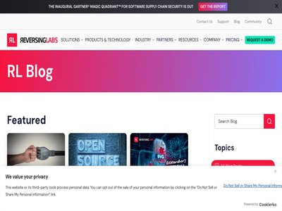

November 19, 2026 · 37 articles

BackBox Linux 10 brings new hacking tools and Ubuntu 26.04 support
November 19, 2026
BackBox Linux is a free, open source penetration testing distribution made by BackBox, a non-profit community project that keeps its own repositories of ethical hacking tools. O... (Help Net Security)

TfL takes Oyster photocard website offline after attackers compromise customer accounts
November 19, 2026
Around 265,000 customers potentially affected as London transport operator grapples with another security breach (The Register - Security)
Rubrik Configuration Resilience rolls back unauthorized Microsoft 365 changes
November 19, 2026
Rubrik announced Configuration Resilience for Microsoft 365, a new offering that protects the key settings governing Microsoft applications such as Microsoft 365, Purview and De... (Help Net Security)
SonicWall urges customers to replace Gen 6 firewalls now
November 19, 2026
SonicWall is urging customers still running Gen 6 firewalls to replace them immediately and to stop using them at the internet edge. All Gen 6 and Gen 6.5 appliances running Son... (Help Net Security)

Splunk Patches Nearly 140 Flaws Across Three Core Products
November 19, 2026
The security updates resolve critical and high-severity issues leading to authentication bypass, remote code execution, and privilege escalation. The post Splunk Patches Nearly... (SecurityWeek)
Bitwarden expands passkey support with new Windows and macOS integrations
November 19, 2026
Bitwarden announced expanded passkey integrations across Windows and macOS, making it easier to access Bitwarden and use passkeys through native operating system authentication.... (Help Net Security)

Microsoft confirms app installation, launch issues after hotpatch
November 19, 2026
Microsoft has shared a workaround for installation and launch issues affecting Office and third-party applications after installing this month's Windows 11 hotpatch. [...] (BleepingComputer)

A Fifth of UK Employees Share Passwords with AI
November 19, 2026
Dashlane research reveals UK workers are sharing passwords with AI tools and granting access to sensitive data, raising major enterprise security concerns (Infosecurity Magazine)
F5 Patches Critical NGINX2Root Flaws as PoC Exploits Go Public
November 19, 2026
The five NGINX2Root vulnerabilities could allow remote, unauthenticated attackers to execute arbitrary code. The post F5 Patches Critical NGINX2Root Flaws as PoC Exploits Go Pub... (SecurityWeek)
Palo Alto Networks to acquire Applied Compute for $4.5 billion
November 19, 2026
Palo Alto Networks will acquire Applied Compute, a platform for post-training and inference of open-weight AI models. The all-stock transaction is valued at $4.5 billion, subjec... (Help Net Security)

PHP Warns of Critical Flaws Ahead of November Security Release
November 19, 2026
PHP will patch critical security flaws across supported versions, including a session handling bug that could allow remote code execution. The PHP development team announced a n... (Security Affairs)
Sticky note on monitor provided keys to the company’s kingdom
November 19, 2026
Don't leave your credentials out in public, where any visitor can see them. (The Register - Security)
GTA 6 scams are after your Google password, money, and crypto wallet
November 19, 2026
Scammers are using the GTA 6 launch to steal Google passwords, sell game keys that may never arrive, and get players to connect crypto wallets. Stefan Dasic, a senior malware re... (Help Net Security)
Ukraine arrests key members of ransomware gang that extorted $40.5 million posing as IT support
November 19, 2026
Four key members of a ransomware group that took more than $40.5 million from at least 28 companies have been detained in Ukraine. The group’s members posed as IT support staff... (Help Net Security)

Scattered Spider’s phishing and SIM-swap tactics led to six-year sentence
November 19, 2026
Scattered Spider used fake texts to break into systems and SIM swaps to intercept security codes. Here’s how to protect your number. (Malwarebytes Labs)

Hackers Breach N-able Cloud Server, Disrupting Email Security Management Across 3 Regions
November 19, 2026
N-able on Wednesday disclosed that unknown threat actors gained unauthorized access to one of the servers in the Mail Assure and Spam Experts Hosted Cloud, causing it to disable... (The Hacker News)
NVIDIA investigating Gentlemen ransomware breach claims
November 19, 2026
NVIDIA is investigating claims of a security breach after the Gentlemen ransomware group has added the company to its dark web data leak site. [...] (BleepingComputer)
nginx2root:AI Discovers Five Critical nginx Flaws and a Path to Root
November 19, 2026
nginx2root exposes five critical nginx flaws and a Linux kernel bug that can lead to remote code execution and root access. Xint Research has disclosed nginx2root, five distinct... (Security Affairs)
Rakuten Securities Breach Could Impact 15 Million Customers
November 19, 2026
Japanese broker Rakuten Securities has revealed a data breach involving the account details of 15 million customers (Infosecurity Magazine)
Java4Shell Exploitation Attempts Begin as Vendors Rush Out Advisories
November 19, 2026
GreyNoise, WatchTowr and Cloudflare report probing and exploit attempts, while Cisco, Elastic, Red Hat and Siemens detail impact. The post Java4Shell Exploitation Attempts Begin... (SecurityWeek)
Ruby Releases Fixes for 7 Regex and String Flaws, Warns 5 Have Proof-of-Concept RCE
November 19, 2026
Ruby contains seven memory-safety flaws in its regular expression engine and its string case-conversion code. For five of them, its maintainers say, proof-of-concept exploits, o... (The Hacker News)
US enlists private firms to cut scammers off from victims’ cash
November 19, 2026
Stopping victims’ money before it reaches foreign scam, cybercrime and sextortion networks is the goal of a new US unit launched by the Homeland Security Task Force (HSTF). The... (Help Net Security)
Researcher Demonstrates Database RCE Exploits Affecting PostgreSQL, MySQL and Oracle
November 19, 2026
Low-privilege database accounts that cannot read a single application table can still be used to run code on the database server itself, a researcher has shown, by reaching memo... (The Hacker News)
CISA Warns of 4 Exploited Flaws Linked to Ransomware, Cryptomining, and LLMjacking Attacks
November 19, 2026
The U.S. Cybersecurity and Infrastructure Security Agency (CISA) on Wednesday added four vulnerabilities impacting Synology DiskStation Manager (DSM), BerriAI LiteLLM, Apache Ax... (The Hacker News)

Africa Retakes Top Spot as Most Attacked Region, Led by Nigeria Surge
November 19, 2026
Nigeria faced more than double the cyber threats of the previous year, with Angola and Kenya also in the top-5 most attacked countries globally. (Dark Reading)
PHP Readies Critical Security Updates to Patch Another RCE Flaw
November 19, 2026
Affecting the session upload progress, CVE-2026-115560 was publicly disclosed two days after PHP2Shell patches landed. The post PHP Readies Critical Security Updates to Patch An... (SecurityWeek)
Game consoles and Teslas are slipping past OT network segmentation
November 19, 2026
Claroty went looking for consumer gadgets on hospital, factory and commercial networks and found tens of thousands of them, from game consoles and Roku streaming sticks to Tesla... (Help Net Security)
AI agents inherit employee access, and nobody’s watching how they use it
November 19, 2026
AI agents that employees build inside project trackers, CRMs and automation tools often run on the credentials of the person who created them and carry that person’s access to c... (Help Net Security)

Srsly Risky Biz: Phew! Some Regulatory Relief for AI Hacks
November 19, 2026
Your weekly dose of Seriously Risky Business news is written by Tom Uren and edited by Patrick Gray and Amberleigh Jack. This week's edition is sponsored by Thinkst . You can he... (Risky Business News)

CVE-2026-114938 - OpenJDK Base64 Decoder Intrinsic Out-of-Bounds Write Issue
November 19, 2026
Bulletin ID: 2026-189-AWS Publication Date: 11/18/2026 17:00 PM PST Description: AWS is aware of CVE-2026-114938, a memory issue in the Base64 decoder intrinsic of OpenJDK 17.0.... (AWS Security Bulletins)

Microsoft Adopts Intel Foundry EMIB for Custom Azure Chips and Secures Multiyear Xeon Supply
November 19, 2026
Microsoft and Intel announced an expansion of their long-term Azure collaboration on November 18 in the United States. Microsoft will use Intel Foundry's EMIB for custom Azure c... (Joho no Todai)
Unauthenticated Remote Code Execution in NGINX: HTTP/2 Flaw Lurked for 11 Years
November 19, 2026
Two memory-safety vulnerabilities have been found in NGINX's HTTP/2 processing that could allow unauthenticated remote code execution. One had existed since version 1.9.5 in 201... (Joho no Todai)

Attackers Exploit Optimizely Flaw To Inject Malicious JavaScript
November 19, 2026
IntroductionOn November 16, 2026, an attacker exploited a vulnerability in Optimizely's Web Experimentation account signup flow. Optimizely is a platform used to create, manage,... (Zscaler ThreatLabz)
Democrat Garcia Tells 12 Trump Family Members and Allies to Preserve Records, Plans Probes Into Conflicts, DHS Fraud, and Epstein Cover-Up
November 19, 2026
Ahead of taking control in January, the incoming Democratic chair of the House Oversight Committee has asked 12 members of President Trump's family, Cabinet, and inner circle to... (Joho no Todai)

ISC Stormcast For Thursday, November 19th, 2026 https://isc.sans.edu/podcastdetail/10186, (Thu, Nov 19th)
November 19, 2026
(SANS ISC)
Treat Your Honeypot Analysis Like Code: Git, Pull Requests and a Human Gate for AI [Guest Diary], (Wed, Nov 18th)
November 19, 2026
[This is a Guest Diary by Kevin Truong, an ISC intern as part of the SANS.edu BACS program] (SANS ISC)
Quantum position verification could lock remote hackers out, NIST shows
November 19, 2026
Physicists at the National Institute of Standards and Technology have used entangled photons to confirm that a party was physically where it claimed to be. NIST physicist Kriste... (Help Net Security)
November 18, 2026 · 73 articles

Microsoft Agent Framework PyPI Supply-Chain Attack: Versions 1.26.1 and 1.26.2 Steal Cloud Credentials
November 18, 2026
A critical supply-chain compromise was discovered affecting Microsoft’s agent-framework PyPI meta-package, where versions 1.26.1 and 1.26.2 were injected with credential-stealin... (Orca Security Blog)

NSA continues response to interruptions in classified internal network
November 18, 2026
Day 2 of the NSA Net's disruptions included staggered arrivals and logins at Fort Meade, while a source said classified national security work continued unimpeded. (The Record)
Russian cyber-espionage group used stolen cloud data to hack into organizations, Google says
November 18, 2026
Russian state-backed hackers are using information stolen from cloud accounts to impersonate trusted contacts and launch new espionage attacks against people in their victims' p... (The Record)

How Cloudflare WAF helps protect against Java4Shell (CVE-2026-114938)
November 18, 2026
Java4Shell is a critical memory-corruption flaw in OpenJDK's Base64 decoder that can lead to remote code execution. Cloudflare has released six WAF managed rules for paid plans... (Cloudflare Blog)
Suspected Chinese APT Rebuilds EggStreme Malware After Exposure
November 18, 2026
Suspected Chinese APT rebuilt EggStreme malware and infrastructure after Bitdefender exposure (Infosecurity Magazine)

CVE-2026-123007: Critical NGINX HTTP/2 Integer Underflow Leads to RCE (FIXED)
November 18, 2026
Overview Today, both Rapid7 and F5 are disclosing CVE-2026-123007 , a critical integer underflow vulnerability affecting nginx HTTP/2, which can allow for unauthenticated remote... (Rapid7 Blog)
Microsoft Takes Perception Agentic Security Platform Out of Preview
November 18, 2026
Four blue team agents and the Recon Agent are now generally available, while integrations and vulnerability shielding are in preview. The post Microsoft Takes Perception Agentic... (SecurityWeek)
65 Characters to RCE: Inside the Java4Shell Vulnerability
November 18, 2026
Calif disclosed Java4Shell, a critical OpenJDK Base64 bug enabling pre-auth RCE in Jenkins, Jira, Keycloak and more. Patches are out. Update now. Calif researchers disclosed Jav... (Security Affairs)

Who was that trying to phone me just now? How one-ring phone scams work
November 18, 2026
Sometimes it only takes one ring to get your attention - here’s how to keep “wangiri” scammers at bay (ESET WeLiveSecurity)

Harden-Runner Brings Runtime Security Inside Kata and Nitro Runner Pods
November 18, 2026
Harden-Runner monitors GitHub Actions jobs and enforces egress policies inside runner microVMs on Kata Containers and Amazon EKS Nitro Sandboxes. (StepSecurity Blog)

Step-up authentication: how to right-size authentication to risk
November 18, 2026
Not every action a user takes in an application carries the same risk. Viewing an account balance in a banking application isn’t the same as wiring several thousand dollars to a... (AWS Security Blog)
Get ready for another critical PHP security release to drop
November 18, 2026
At least one dangerous RCE bug will get a fix on Thursday (The Register - Security)
Detecting cross-cloud lateral movement with AWS Security Hub
November 18, 2026
Most organizations run a multicloud estate, and so do the attackers targeting them. An adversary who compromises an identity in one provider follows that identity wherever it le... (AWS Security Blog)
An updated Clairic and Clairic-flash are now open-weight, from the new Workers AI Superintelligence team
November 18, 2026
Add your teaser here. It should complement the headline, not repeat it. Teaser cannot be longer than 240 characters. The Blog Review Gem will suggest an excerpt. Clairic graduat... (Cloudflare Blog)
Russia's Cold Relic APT Turns One Cloud Breach Into Another
November 18, 2026
The Russia-linked threat group is using data stolen from one victim to target others via convincing impersonations and social engineering attacks. (Dark Reading)
AI found more critical bugs in another widely used technology running 225M websites
November 18, 2026
Open source NGINX joins patchapalooza (The Register - Security)
Consensus mounts that tech outages were fueled by patching of AI-discovered vulnerabilities
November 18, 2026
But cyberattacks aren’t directly to blame, Trump administration officials said. The post Consensus mounts that tech outages were fueled by patching of AI-discovered vulnerabilit... (CyberScoop)
Coinbase blocks $4.7 million in transfers to Elon Musk deepfake scam
November 18, 2026
Coinbase says it blocked $4.7 million in cryptocurrency transfers to scammers promoting a fake giveaway using an AI-generated deepfake of Elon Musk during a Tesla livestream tha... (BleepingComputer)
Strike Graph Launches Integration AI to Automate Continuous Compliance Evidence Using Any Existing Tool
November 18, 2026
New agentic AI solution leverages APIs to collect compliance evidence from systems and applies it to over 30 frameworks with no duplicate work. (Dark Reading)
Judge signs off on sale of Spirit Airlines’ data to Google
November 18, 2026
Google can take possession of defunct Spirit Airlines' data for $10 million, a federal bankruptcy judge has ruled. The tech giant agreed to protections as it plans to use the da... (The Record)
AttackIQ Research Reveals How Iranian Cyber Groups Hand Off Network Access to Enable Destructive Attacks
November 18, 2026
Analysis of 20 Iranian state-sponsored threat groups details how espionage, ransomware, and hacktivism intersect in state-backed cyber campaigns. (Dark Reading)
Trump administration officials size-up a bad stretch for tech
November 18, 2026
Homeland Security Secretary Markwayne Mullin said the administration will reach out to industry to get companies to share more information about big patches before they take eff... (The Record)
Last of Five Defendants Sentenced in US Scattered Spider Hacking Case
November 18, 2026
British national Tyler Robert Buchanan has been sentenced to 6 years in prison in the United States, the DOJ announced. The post Last of Five Defendants Sentenced in US Scattere... (SecurityWeek)
Critical Perforce Puppet RCE Exploited in Attacks
November 18, 2026
Tracked as CVE-2026-115731, it allows a client that holds any CA-signed agent certificate to execute code on the server. The post Critical Perforce Puppet RCE Exploited in Attac... (SecurityWeek)
Oracle Patches 950 Vulnerabilities With November 2026 CSPU
November 18, 2026
Over 300 patches address unauthenticated, remotely exploitable flaws, while 62 fix critical-severity flaws. The post Oracle Patches 950 Vulnerabilities With November 2026 CSPU a... (SecurityWeek)

CrowdStrike Is Building the Engine of the Agentic SOC with Falcon Next-Gen SIEM
November 18, 2026
(CrowdStrike Blog)
Java4Shell, NGINX2Shell and more: Why we are not at "Yellow", (Wed, Nov 18th)
November 18, 2026
About a month ago, we went to Infocon Yellow for the first time in a few years. We decided to address the php2shell vulnerability and alert our readers to its significant impact... (SANS ISC)
Data breach impacts 40 Irish credit unions in reported IT provider hack
November 18, 2026
A reported cyberattack on Wellington IT has exposed sensitive information belonging to members of 50 credit unions, the majority of which are located in Ireland. [...] (BleepingComputer)
Lawmakers call on White House to develop defensive AI cyber systems
November 18, 2026
A bipartisan Senate duo urged the White House to launch a national effort to more robustly confront AI-enabled cyber threats in light of recent security incidents involving arti... (The Record)
It’s NGINX’s turn to cause vulnpocalypse headaches
November 18, 2026
Researchers just dropped five NGINX exploits, including one that chains an HTTP/2 bug with a kernel flaw to seize the machine behind the web server. The post It’s NGINX’s turn t... (CyberScoop)

Java4Shell: When Decoding base64 Leads to RCE
November 18, 2026
On November 17, 2026, OpenJDK and Oracle fixed Java4Shell. It may allow pre-auth RCE under default configurations. Exploitation was confirmed on identity, CI/CD, artifact reposi... (GitGuardian Blog)
Critical Apache Roller RCE Flaw Under Active Exploitation, No Authentication Required
November 18, 2026
A critical security flaw in Apache Roller, an open-source, Java-based blogging platform, has come under active exploitation in the wild, according to the Apache Software Foundat... (The Hacker News)
Java4Shell Flaw Threatens Global Enterprises, Java Application Ecosystem
November 18, 2026
Discovered using AI, the memory corruption vulnerability affects the OpenJDK runtime and could allow unauthenticated attackers to take over systems. (Dark Reading)

Why AI-ROC Is the Future of Exposure Management
November 18, 2026
Executive Summary Security teams have never had better visibility into their assets, vulnerabilities, and threats. What they lack is the speed to act on it. Frontier AI models a... (Qualys Blog)
Protecting where software gets built: StepSecurity’s $20 million Series A
November 18, 2026
Today, we’re announcing an oversubscribed $20 million Series A led by Elephant to expand protection for developer machines, package downloads, CI/CD pipelines, and agent sandboxes. (StepSecurity Blog)
Cyber insurers now want proof you can actually recover
November 18, 2026
PARTNER CONTENT: As carriers tighten underwriting, a backup job marked green is no longer enough. Here’s the evidence underwriters expect (The Register - Security)
AI-Powered Attacks Go Autonomous: Start With Credentials
November 18, 2026
Fully autonomous cyberattacks may be only months away. The incidents happening right now show exactly where defenders should focus their attention. (GitGuardian Blog)

Threat Researcher’s Notebook: Detection Strategies for ARTEX and Related Forks
November 18, 2026
(ReversingLabs Blog)
VeroSecurity Raises $11 Million for AI Security Engineering Platform
November 18, 2026
AI Security Engineering is a new and essential security discipline now being brought into focus by VeroSecurity. The post VeroSecurity Raises $11 Million for AI Security Enginee... (SecurityWeek)
From Deepfakes to Helpdesk Impersonation: Why Stronger Verification Matters
November 18, 2026
Attackers are using deepfakes, helpdesk impersonation, and fake IT support requests to deceive employees and gain unauthorized access to corporate systems. Specops Software exam... (BleepingComputer)
Most SecOps Leaders Are Changing the L1 Role as Agent Use Grows
November 18, 2026
Security leaders are rapidly redesigning SOCs for the AI agent era, with 74% already deploying the technology (Infosecurity Magazine)
AI-powered cyber threats are changing the rules of enterprise recovery
November 18, 2026
SPONSORED POST: As cyberattacks become more sophisticated, organizations need to look beyond prevention and ensure they can recover critical data quickly and reliably (The Register - Security)
Open by Default, Already Occupied: Threat Actors are Renting your Compute
November 18, 2026
(Rapid7 Blog)
Major Brazilian Signature Apps Enable RCE & Fraud
November 18, 2026
Government-sanctioned authentication middleware is used for exceptionally important legal documents, yet it's often rife with RCE bugs. (Dark Reading)

LABScon26 Replay | Governing Just-in-Time Intelligence: AI, Dual-Use Capabilities, and the Limits of Guardrails
November 18, 2026
ICRC’s Mauro Vignati argues AI guardrails can’t fix a deeper problem: a 70-year-old distribution model now applied to dual-use cognitive capabilities. (SentinelLabs)
Cognizant and Qualys Redefine AI-Era Managed Security Service
November 18, 2026
Cognizant will use the full Qualys portfolio to bring its clients what the frontier AI era demands: AI-speed detection, hyper-prioritization, and confident remediation for every... (Qualys Blog)
Russian APT Poses as Employee of Hacked Firm to Breach Another US Organization
November 18, 2026
Star Blizzard weaponized data and identities stolen in late 2025 to phish and compromise a US organization. The post Russian APT Poses as Employee of Hacked Firm to Breach Anoth... (SecurityWeek)
Who protects the antivirus? How we secure Malwarebytes itself
November 18, 2026
Imagine a piece of malware that can disable your antivirus and leave you unprotected. That's exactly what we as engineers work to prevent. (Malwarebytes Labs)

Fix Tenable One findings where developers work: Tenable and OpenAI Daybreak Defense Factory
November 18, 2026
Tenable One customers can now bring selected findings into OpenAI Daybreak Defense Factory through a local Codex Security CLI import with Tenable’s description and solution atta... (Tenable Blog)
Java4Shell Vulnerability Allows Remote Attacks on Major Java Apps
November 18, 2026
A critical OpenJDK vulnerability could expose major Java applications to remote code execution, prompting CISA to urge organizations implement mitigations (Infosecurity Magazine)
New Attack Bypasses TPM Lockout to Crack Windows Hello and BitLocker PINs in Days, Not Years
November 18, 2026
On AMD-based PCs and some Intel PCs, the TPM lockout for Windows Hello and BitLocker PINs can be reset by someone who opens the PC's case, researchers at Technische Universität... (The Hacker News)
AI Pentesting Checklist for Web Apps: 15 Questions to Ask Before Choosing a Vendor
November 18, 2026
TL;DR Attackers move first. On average, exploitation now starts before a patch exists (Mandiant M-Trends 2026). In 1H 2026, 23% of vulnerabilities VulnCheck added to its exploit... (The Hacker News)

France Is Blaming Iran for the Fridge Cyberattack
November 18, 2026
Interesting : U.S. intelligence agencies have recently reached a “”ow confidence” assessment that Iran was responsible for the attacks in France, according to three U.S. officia... (Schneier on Security)
CISO Conversations: Patti Degnan - Part of the Job Is Deciding What Not to Do
November 18, 2026
Patti Degnan’s identity was stolen in 2006. It set her on a path to the CISO seat at endpoint security firm Glow. The post CISO Conversations: Patti Degnan - Part of the Job Is... (SecurityWeek)
Chrome 158 Patches 204 Vulnerabilities
November 18, 2026
Google handed out $11,000 for five externally reported flaws but has yet to determine the amounts to be paid for 36 bugs. The post Chrome 158 Patches 204 Vulnerabilities appeare... (SecurityWeek)
Java4Shell: A critical flaw with a narrow reach
November 18, 2026
Researchers used AI to find a Java vulnerability and named it Java4Shell. Here’s why organizations need to patch. (Malwarebytes Labs)
Quality Isn’t The Main Worry About AI Pentesting - Data Privacy and Production Safety Are
November 18, 2026
AI is speeding up how software is built, which means more code, more changes, and more chances for vulnerabilities to reach production. It's speeding up how attackers find and e... (The Hacker News)
CrowdStrike Brings the Human Advantage to AI Detection and Response
November 18, 2026
(CrowdStrike Blog)

The challenge of defending against bulletproof dead drops on public blockchains
November 18, 2026
The evolution of malware command-and-control (C2) infrastructure has shifted away from fragile, centralized servers and hardcoded domains toward resilient, decentralized blockch... (Cisco Talos)
UAT-12643: Suspected North Korea-aligned actor blends blockchain resilience with targeted infostealing
November 18, 2026
Cisco Talos discovered malicious infrastructure associated with a financially motivated threat group we are tracking as UAT-12643. (Cisco Talos)
Three AI Models Agree on Just One of 121 Potential Code Flaws
November 18, 2026
Echo tested Claude Mythos, GPT-5.6 Sol and GLM-5.3 on the same code and found little overlap (Infosecurity Magazine)
Introducing the StepSecurity Secure Registry Community Tier, Integrated with Harden-Runner
November 18, 2026
Today, we’re making the StepSecurity Secure Registry available for free as part of our community tier, and integrating it with Harden-Runner to make it easier to adopt in GitHub... (StepSecurity Blog)
UK MPs want AI watchdog with power to pull the plug on dangerous models
November 18, 2026
Parliamentary committee says tech giants can't be left to mark their own homework when it comes to AI safety (The Register - Security)
Microsoft announces Windows Server 2028 with hardened security
November 18, 2026
Microsoft has announced Windows Server 2028, the next major release of its server operating system, at the Ignite 2026 conference on Tuesday. [...] (BleepingComputer)
Ubuntu AI security patches are here, if you’re willing to test them yourself
November 18, 2026
Canonical is letting Ubuntu Pro customers install security patches written by AI agents before its engineers finish reviewing and testing them. The patches come from Surge, a sy... (Help Net Security)
Risky Bulletin: Hackers hijack Optimizely to deliver malware on 178 popular sites
November 18, 2026
In other news: Hackers breach Japan's supercomputer; Edge is getting a Lockdown Mode; EU sanctions NoName057(16). (Risky Business News)
Windows 11 Adds a Single Pass-or-Fail Check for Eight Security Features: Developers Decide How Their Apps Respond
November 18, 2026
Microsoft has released Baseline Protection in an Insider Preview. It combines eight checks, including Secure Boot and Memory Integrity, into a single pass-or-fail result that ap... (Joho no Todai)
New StepSecurity Control: Audit GitHub Fork PR Workflow Approval Policies
November 18, 2026
StepSecurity’s new control flags GitHub organizations and public repositories that let fork pull request workflows run without approval. (StepSecurity Blog)

Java4Shell
November 18, 2026
What is the Vulnerability? CVE-2026-114938, known as Java4Shell, is a critical heap-based buffer overflow vulnerability in the Base64 implementation of the Java standard library... (FortiGuard Labs)

Announcing the Sysdig MCP Server for Monitoring
November 18, 2026
The new Sysdig Monitor MCP server connects the AI assistant your team already uses to live container, Kubernetes, and cloud monitoring data. (Sysdig Blog)

How Chainguard’s frontier AI harness keeps your code safe
November 18, 2026
Go on offense with Chainguard Harness, using frontier AI to uncover zero-days, verify exploits, and deliver fixes before attackers strike. (Chainguard Unchained)
Innovating safely with AI: Security and engineering leaders on life after the patch era
November 18, 2026
At Chainguard Assemble London, security leaders discuss AI-driven threats, the limits of traditional patching, and the future of secure development. (Chainguard Unchained)
React2STEAL: What it is and what to check
November 18, 2026
React2STEAL exploits patched React and Next.js vulnerabilities to steal credentials. Learn how the attack works and how to protect your applications. (Chainguard Unchained)
November 17, 2026 · 10 articles
Apple's iCloud, App Store, and Other Services Suffer Widespread Outage: Internal Update Blamed as Another Failure Hits Troubled Week
November 17, 2026
On November 17 Pacific Standard Time, Apple's iCloud sign-in service failed, taking down multiple services including the App Store and Apple Music. Apple said an internal update... (Joho no Todai)
NVIDIA Makes Clear It Will Continue Without Huang: Revenue Hits $115.8 Billion as Board Creates Permanent Security Committee
November 17, 2026
Hours after Huang said he was willing to return as CEO, NVIDIA's board chair said the company would not reinstate him. The same day brought $115.8 billion in quarterly revenue,... (Joho no Todai)
Introducing simplified onboarding for AWS WAF Bot Control at the targeted inspection level
November 17, 2026
Today, we’re announcing simplified onboarding and bot confidence levels for AWS WAF Bot Control at the targeted inspection level, which we refer to as Targeted bot control in th... (AWS Security Blog)
Optimizely Malware Attacks Highlight Third-Party Vendor Risks
November 17, 2026
At least 178 organizations, including several major brands, unwittingly exposed website visitors to hydra-like malware via a third-party platform. (Dark Reading)
A vulnpocalypse bug worthy of attention: Researchers disclose critical flaw in Java with help of AI
November 17, 2026
Oracle shipped a patch this week for the flaw, which a short string of letters can trigger to corrupt memory in Java and hand attackers control of the servers running it. The po... (CyberScoop)
Cloud keys leaked in Docker Hub images are stolen within seconds
November 17, 2026
Credentials and access secrets exposed in public Docker Hub images are being extracted and exploited by attackers within as little as eight seconds of publication. [...] (BleepingComputer)
'TheMailer' Phishing Kit Puts AI in the Driver's Seat
November 17, 2026
The commercial kit uses attacker-supplied AI models to personalize lures, evade spam filters, and scale campaigns to tens of thousands of targets. (Dark Reading)

Borrowed Code, Real Consequences: What OPTIMJACK Teaches Us
November 17, 2026
The OPTIMJACK supply chain attack demonstrates how a compromised vendor script can expose websites, highlighting the need for strict segmentation. The post Borrowed Code, Real C... (Palo Alto Networks Unit 42)
Securely exposing Amazon Bedrock AgentCore Runtime
November 17, 2026
Amazon Bedrock AgentCore Runtime delivers a secure serverless environment to deploy AI agents and tools at scale. When you start talking to your agent, the runtime launches a de... (AWS Security Blog)
Quad9’s withdrawal from France: A canary in the coal mine
November 17, 2026
Quad9's forced withdrawal from France highlights the dangers of mandating DNS-level blocking. We explore why forcing public resolvers to act as content filters is technically fl... (Cloudflare Blog)